ラプラス変換の定義と収束
フーリエ変換は「定常的に振動する成分」を見る道具だったが、増大する信号や減衰しない信号を扱えなかった。本ページでは、フーリエ変換に 減衰因子 を組み込んで一般化した ラプラス変換 を定義し、その 収束領域 と基本的な変換対・性質を整理する。
フーリエからラプラスへ
フーリエ変換 \(F(\omega)=\int_{-\infty}^{\infty} f(t)e^{-i\omega t}dt\) は、信号が 絶対可積分（\(\int_{-\infty}^{\infty}\lvert f(t)\rvert\,dt<\infty\)）であれば必ず存在する。ところが
- \(f(t)=e^{0.5t}\) のように \(t\ge0\) で増え続ける 増大する信号
- 単位ステップ \(u(t)\) のように 減衰しない信号
では、フーリエ積分が収束しない。ここで単位ステップは
である。初期条件（\(t=0\) での値や速度）も、フーリエ変換では自然には扱えない。
そこで、積分する前に 減衰因子 \(e^{-\sigma t}\)（\(\sigma\) は実数）を掛けて無理やり可積分にする、というのがラプラス変換の発想である。
ここで \(s=\sigma+i\omega\) とまとめれば、ラプラス変換 の定義が得られる。
- \(s\) は複素数で、実部 \(\sigma\) が減衰の強さ、虚部 \(\omega\) が角周波数を担う。
- 時間関数を小文字 \(f(t)\)、その変換を大文字 \(F(s)\) で書く。\(\mathcal{L}[\,\cdot\,]\) は「ラプラス変換する」操作を表す。
- \(\sigma=0\) とおけば、\(t\ge0\) の部分だけのフーリエ変換に戻る。
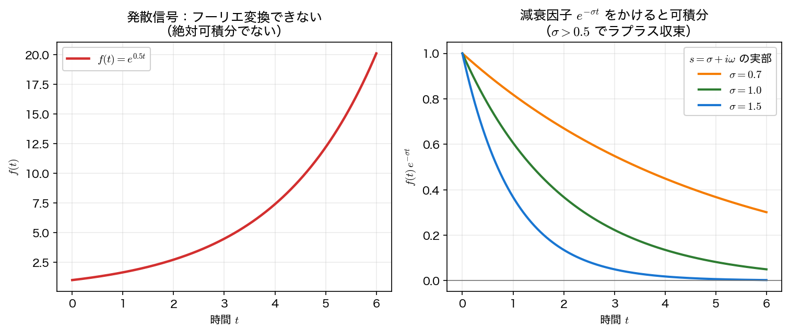
なぜ \(t\ge 0\) なのか（片側ラプラス変換）
積分の下限を \(0\) にした変換を 片側ラプラス変換（unilateral Laplace transform）という。本講義はこれを使う。システム解析では「\(t=0\) でスイッチを入れる」状況が多く、初期値 \(f(0)\) を自然に取り込める。\(t<0\) の値は使わないので、\(f(t)\) と \(f(t)u(t)\) は同じ \(F(s)\) をもつ。
下限は正確には \(t=0\) の直前 \(0^-\) とし、\(t=0\) に集中した入力（インパルス）も積分に含める。微分の公式に現れる初期値 \(f(0)\) も、入力を加える直前の値と読む。
収束領域（ROC）
例として、\(f(t)=e^{-at}\)（\(a\) は実数の定数）を定義どおり積分する。
最後の等号には、\(t\to\infty\) で \(e^{-(s+a)t}\to0\) となることが要る。指数を実部と虚部に分けると、
となる。\(\operatorname{Re}\), \(\operatorname{Im}\) は実部と虚部（\(s=\sigma+i\omega\) なら \(\operatorname{Re}(s)=\sigma\), \(\operatorname{Im}(s)=\omega\)）を表し、\(a\) は実数なので \(\operatorname{Re}(s+a)=\sigma+a\) である。後ろの因子は大きさ \(1\) なので（\(\lvert e^{i\theta}\rvert=\sqrt{\cos^2\theta+\sin^2\theta}=1\) は第2回のオイラーの公式から出る）、\(\lvert e^{-(s+a)t}\rvert=e^{-\operatorname{Re}(s+a)t}\) になる。これが \(0\) に近づくのは \(\operatorname{Re}(s+a)>0\)、つまり \(\operatorname{Re}(s)>-a\) のときに限られる。
ラプラス変換の積分が収束する \(s\) の範囲を 収束領域（ROC, Region of Convergence） という。\(e^{-at}\) の ROC は \(\operatorname{Re}(s)>-a\) であり、複素平面上では縦線 \(\operatorname{Re}(s)=-a\) より右の半平面になる。\(\sigma\)（\(=\operatorname{Re}(s)\)）を大きくすれば減衰は強まるが、どこまで小さくできるかには限界がある。その境がこの縦線である。
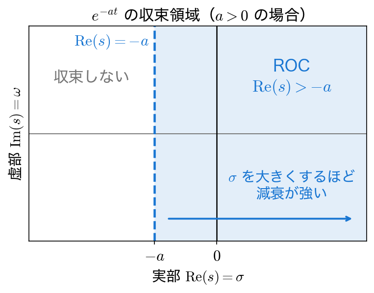
ROC が虚軸を含めばフーリエ変換が求まる
虚軸 \(\operatorname{Re}(s)=0\) の上では \(s=i\omega\) なので、\(F(i\omega)\) は \(t\ge0\) の信号のフーリエ変換そのものである。ROC が 虚軸を含めば、\(s=i\omega\) を代入してフーリエ変換が得られる。\(e^{0.5t}\)（\(a=-0.5\)）の ROC は \(\operatorname{Re}(s)>0.5\) で、虚軸を含まない。この代入はできず、フーリエ変換は存在しない（冒頭の図の左）。
基本的な変換対
実用上は、毎回積分するのではなく 変換対 の表を使う。\(f(t)\leftrightarrow F(s)\) と書いて、\(F\) が \(f\) のラプラス変換であることを表す。代表的なものを挙げる（すべて \(t\ge0\)、\(u(t)\) は省略）。
| \(f(t)\) | \(F(s)\) | ROC |
|---|---|---|
| \(\delta(t)\) | \(1\) | 全平面 |
| \(u(t)\)（ステップ） | \(\dfrac{1}{s}\) | \(\operatorname{Re}(s)>0\) |
| \(t\) | \(\dfrac{1}{s^2}\) | \(\operatorname{Re}(s)>0\) |
| \(t^n\)（\(n=0,1,2,\dots\)） | \(\dfrac{n!}{s^{n+1}}\) | \(\operatorname{Re}(s)>0\) |
| \(e^{-at}\) | \(\dfrac{1}{s+a}\) | \(\operatorname{Re}(s)>-a\) |
| \(\sin\omega t\) | \(\dfrac{\omega}{s^2+\omega^2}\) | \(\operatorname{Re}(s)>0\) |
| \(\cos\omega t\) | \(\dfrac{s}{s^2+\omega^2}\) | \(\operatorname{Re}(s)>0\) |
| \(e^{-at}\sin\omega t\) | \(\dfrac{\omega}{(s+a)^2+\omega^2}\) | \(\operatorname{Re}(s)>-a\) |
以下では、表の各行を定義から 1 つずつ導く。各図の上段は \(f(t)\)、下段は \(s=\sigma+i\omega\) で \(\omega=0\) とおいた実軸上の \(F(\sigma)\) である。このとき \(F(\sigma)=\int_0^{\infty}f(t)\,e^{-\sigma t}\,dt\) は、減衰因子を掛けた \(f(t)\,e^{-\sigma t}\) の面積にあたる。下段の薄い青は ROC、縦の破線はその境を表す。ROC の外では積分が収束しないので、\(F(\sigma)\) を描いていない。
\(\delta(t)\)
\(\delta(t)\) は \(t=0\) に集中した面積 \(1\) の鋭いパルス（単位インパルス）で、\(\int f(t)\,\delta(t)\,dt=f(0)\) を満たす。つまり、掛けた関数の \(t=0\) での値を取り出す。下限が \(0^-\) なのでパルス全体が積分に入り、
となる。値はどの \(s\) でも \(1\) なので、ROC は全平面である。
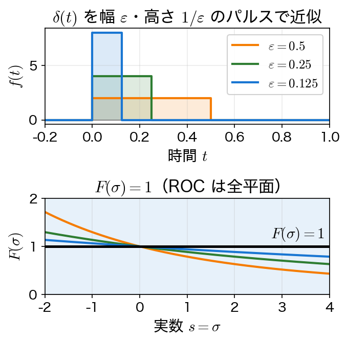
\(u(t)\)
\(t>0\) では \(u(t)=1\) なので、\(e^{-st}\) だけを積分すればよい。
前節の \(e^{-at}\) で \(a=0\) とした場合にあたり、ROC は \(\operatorname{Re}(s)>0\) である。
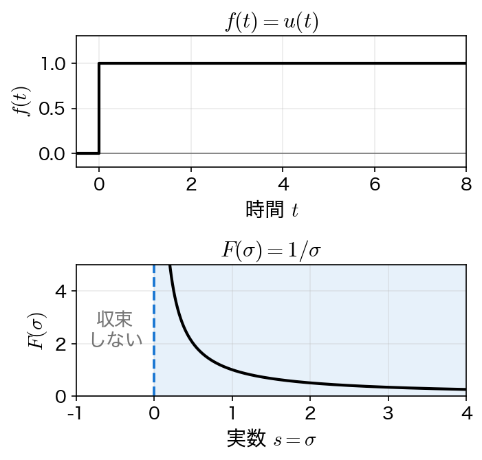
\(t\)
部分積分 \(\int_0^{\infty}f\,g'\,dt=\bigl[f\,g\bigr]_0^{\infty}-\int_0^{\infty}f'\,g\,dt\) で、\(f=t\), \(g=-e^{-st}/s\) とする。
境界の項が \(0\) になるのは、\(\operatorname{Re}(s)>0\) なら \(t\to\infty\) で \(e^{-\sigma t}\) の減衰が \(t\) の増加に勝つからである。ROC は \(\operatorname{Re}(s)>0\) となる。
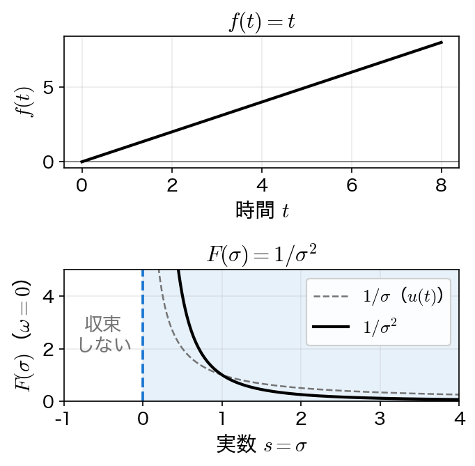
\(t^n\)
\(t\) と同じ部分積分で \(f=t^n\) とすると、次数が 1 つ下がる。
\(n\ge1\) なら、境界の項は \(t=0\) でも \(t\to\infty\)（\(\operatorname{Re}(s)>0\)）でも \(0\) になる。これを \(\mathcal{L}[t^0]=\mathcal{L}[u(t)]=1/s\) まで \(n\) 回くり返すと、次を得る。
ここで \(n!=n(n-1)\cdots2\cdot1\)、\(0!=1\) である。
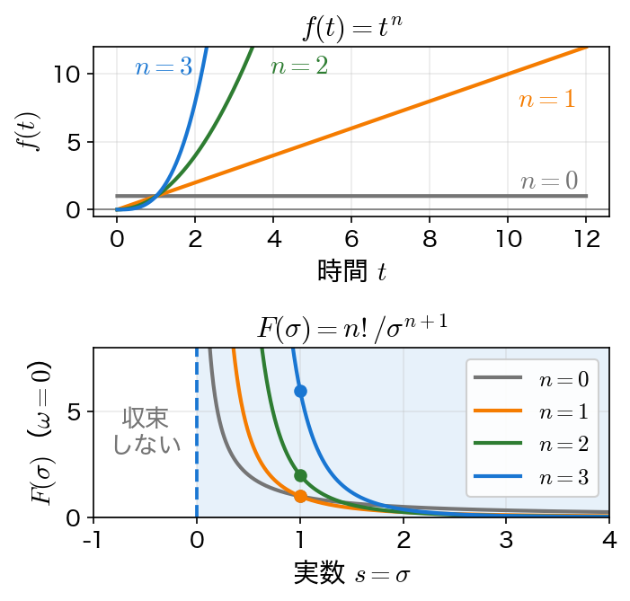
\(e^{-at}\)
前節で定義どおり積分し、\(\mathcal{L}[e^{-at}]=1/(s+a)\)、ROC は \(\operatorname{Re}(s)>-a\) を得た。\(\sigma\) が負でも、\(\sigma+a>0\) なら積分は収束する。
この計算は \(a\) が複素数でもそのまま通る。\(\lvert e^{-(s+a)t}\rvert=e^{-\operatorname{Re}(s+a)t}\) で、変わるのは \(\operatorname{Re}(s+a)=\sigma+\operatorname{Re}(a)\) となる点だけである。したがって ROC は \(\operatorname{Re}(s)>-\operatorname{Re}(a)\) になる。以下の 3 つでは、この式に複素数の \(a\) を入れる。
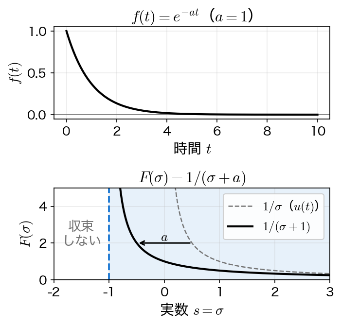
\(\sin\omega t\)
オイラーの公式 \(e^{i\theta}=\cos\theta+i\sin\theta\) から、\(\sin\omega t\) は 2 つの指数関数に分けられる。
積分は項ごとに分けられる（線形性。次節で扱う）。各項に \(e^{-at}\) の結果を \(a=\mp i\omega\) として使う。
ROC は \(\operatorname{Re}(s+a)=\operatorname{Re}(s\mp i\omega)=\operatorname{Re}(s)>0\) である。
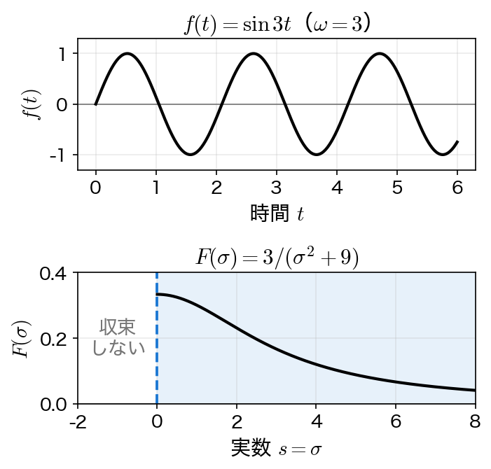
\(\cos\omega t\)
\(\sin\omega t\) と同じく 2 つの指数関数に分け、今度は和をとる。
ROC は \(\sin\omega t\) と同じ \(\operatorname{Re}(s)>0\) である。
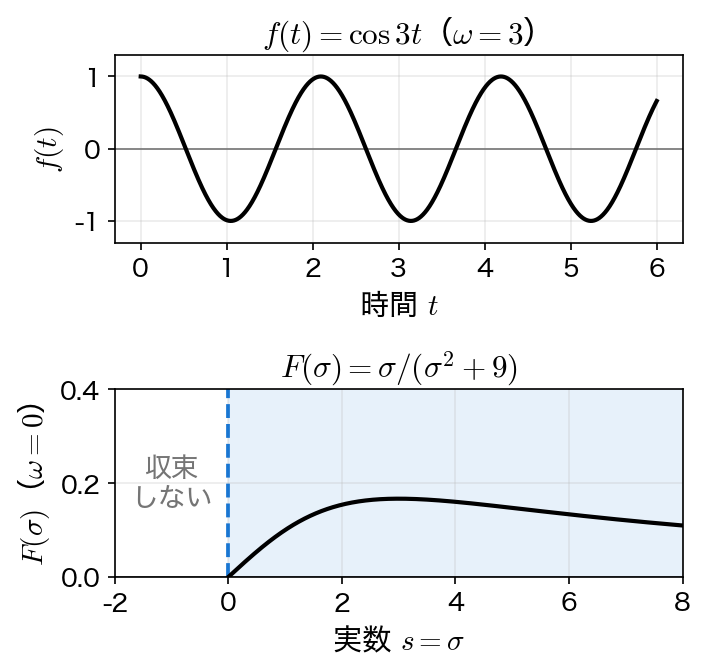
\(e^{-at}\sin\omega t\)
\(e^{-at}\) が掛かっていても、2 つの指数関数に分けられる。
\(e^{-at}\) の結果の \(a\) に \(a\mp i\omega\) を入れる。
ROC は \(\operatorname{Re}(s+a\mp i\omega)=\operatorname{Re}(s)+a>0\)、つまり \(\operatorname{Re}(s)>-a\) である。
結果は \(\sin\omega t\) の変換の \(s\) を \(s+a\) に替えた形である。この関係は \(\sin\) に限らず成り立ち、次節の s 推移として表にまとめる。
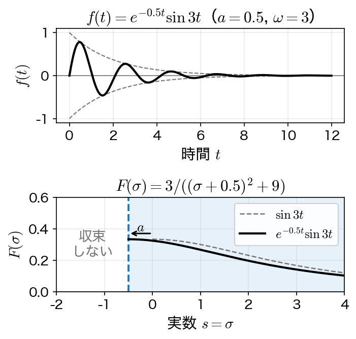
\(s\) 平面全体での \(\lvert F(s)\rvert\)
ここまでの図の下段には、実軸 \(\omega=0\) の上の \(F(\sigma)\) を描いた。\(s=\sigma+i\omega\) の全体にわたって \(\lvert F(s)\rvert\) を描くと、次の図になる。
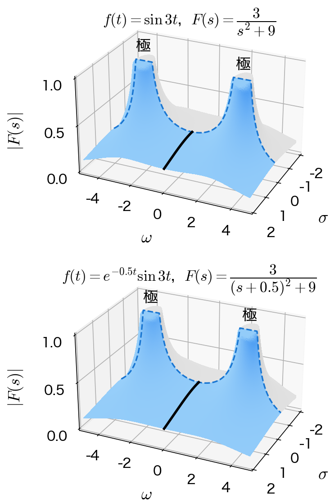
黒の線は、\(\sin 3t\) と \(e^{-0.5t}\sin 3t\) の図の下段の \(F(\sigma)\) である。曲面を実軸 \(\omega=0\) で切った断面にあたる。
\(\lvert F\rvert\) は、分母が \(0\) になる点で限りなく大きくなる。この点を 極 という（逆ラプラス変換と s 平面 で扱う）。\(\sin 3t\) の極は \(\pm3i\) にあり、ROC の境 \(\operatorname{Re}(s)=0\) はこの 2 点を通る。極が実軸の外にあるので、実軸上の \(F(\sigma)\) は ROC の境でも有限の値 \(1/3\) をとる。\(\sin\omega t\) の図で \(\sigma\to0\) としても \(F(\sigma)\) が発散しなかったのは、このためである。
\(e^{-0.5t}\) を掛けると、極は \(-0.5\pm3i\) へ、ROC の境は \(\operatorname{Re}(s)=-0.5\) へ移る。どちらも \(0.5\) だけ左へずれる。極はやはり実軸の外にあるので、\(F(\sigma)\) は ROC の境 \(\sigma=-0.5\) でも有限の値 \(1/3\) をとる。極 \(-0.5\pm3i\) の実部は \(e^{-0.5t}\sin 3t\) の減衰率 \(0.5\) に負号を付けた値、虚部は角周波数 \(3\) に \(\pm\) を付けた値である（逆ラプラス変換と s 平面 で扱う）。
曲面を縦線 \(\operatorname{Re}(s)=\sigma\) で切ると、別の読み方ができる。\(s=\sigma+i\omega\) の実部 \(\sigma\) を決めて虚部 \(\omega\) だけを動かすと、定義の式は
と書ける。右辺は \(f(t)e^{-\sigma t}\) のフーリエ変換である。つまり、縦線の上の \(F\) は、\(f(t)\) に \(e^{-\sigma t}\) を掛けた信号のスペクトルである。\(e^{-0.5t}\sin 3t\) で、ROC の中の縦線を 4 本選んで重ねると、次の図になる。
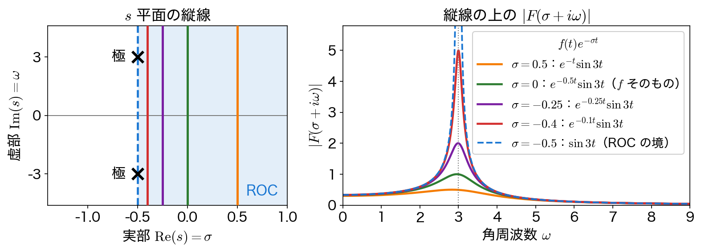
\(f(t)=e^{-0.5t}\sin 3t\) に \(e^{-\sigma t}\) を掛けると \(e^{-\alpha t}\sin 3t\) になる。\(\alpha=\sigma+0.5\) は掛けた後の信号の減衰率である。\(\sigma\) を極の実部 \(-0.5\) に近づけるほど \(\alpha\) は小さくなり、信号は長く振動を続ける。そのぶん \(\omega=3\) の山は高く細くなる。
山の高さは式から求まる。\((\alpha+i\omega)^2+9=(9+\alpha^2-\omega^2)+2i\alpha\omega\) なので、分母の大きさの 2 乗は \((9+\alpha^2-\omega^2)^2+4\alpha^2\omega^2\) である。これは \(\omega^2=9-\alpha^2\) で最小値 \(36\alpha^2\) をとる。したがって山の高さは \(3/(6\alpha)=1/(2\alpha)\) で、\(\sigma=0.5,\ 0,\ -0.25,\ -0.4\) では \(0.5,\ 1,\ 2,\ 5\) である。山の幅（高さが山の \(1/\sqrt2\) になる 2 点の間隔）は数値で \(2.33,\ 1.03,\ 0.50,\ 0.20\) で、\(\alpha\) が小さいときおよそ \(2\alpha\) である。
\(\sigma=-0.5\) では \(\alpha=0\) で、\(f(t)e^{-\sigma t}=\sin 3t\) となる。減衰しない振動なので、\(\omega=3\) で \(\lvert F\rvert\) は限りなく大きくなる。この点が極 \(-0.5+3i\) である。フーリエ変換では、純粋な振動のスペクトルが 1 つの角周波数で限りなく大きくなった。ラプラス変換では、減衰振動 \(e^{-0.5t}\sin 3t\) が、減衰率 \(0.5\) と角周波数 \(3\) をまとめた 1 点 \(s=-0.5+3i\) で限りなく大きくなる。これが極である。
図には \(\omega\ge0\) の側だけを描いた。\(f\) が実数なので \(\lvert F(\sigma-i\omega)\rvert=\lvert F(\sigma+i\omega)\rvert\) となり、\(\omega<0\) の側も同じ形になる。もう 1 つの極 \(-0.5-3i\) はその側にある。
sympy とは
ここからは、ラプラス変換の計算を Python で確かめる。これまで使ってきた NumPy・SciPy は 数値計算 のライブラリである。変数には数や配列が入り、結果は有限の桁で丸めた小数で返る。たとえば np.sqrt(8) は 2.8284271247461903 を返す。
sympy（SymPy）は 記号計算（数式処理）のライブラリである。\(x\) や \(s\) のような文字を文字のまま扱い、因数分解・微分・積分・方程式の解・ラプラス変換を、手計算と同じく式の形で返す。sp.sqrt(8) は 2*sqrt(2) という厳密な値を返す。本講義では第6〜8回と第11回で、変換や部分分数分解の計算と、手計算の答え合わせに使う。Colab には最初から入っている（第1回の ライブラリの確認 で import した）。図を描く、微分方程式を数値で解くなど、数値が要る場面では引き続き NumPy・SciPy を使う。
| NumPy・SciPy | sympy | |
|---|---|---|
| 扱うもの | 数・配列 | 文字を含む式 |
| \(\sqrt{8}\) の結果 | np.sqrt(8) → 2.8284271247461903 |
sp.sqrt(8) → 2*sqrt(2) |
| 得意な計算 | 数値積分・FFT・微分方程式の数値解 | 因数分解・微分・積分・方程式の解・ラプラス変換 |
sympy の使い方
使い方は次の 3 段である。
sp.symbolsで記号を作る。x = sp.symbols("x")とすると、Python の変数xには数ではなく記号 \(x\) が入る。- 記号と演算子、sympy の関数（
sp.sin,sp.expなど）で式を組む。NumPy のnp.sinなどは記号を受け付けない。 - 式を sympy の関数（
sp.factor,sp.solve,sp.diff,sp.integrateなど）に渡すと、答えが式で返る。
import sympy as sp
x = sp.symbols("x") # 記号 x を作る
f = x**2 + 3*x + 2 # 式を組む
print(f)
print(sp.factor(f)) # 因数分解
print(sp.solve(f, x)) # f=0 を解く
print(sp.diff(sp.sin(x), x)) # 微分
print(sp.integrate(sp.exp(-2*x), (x, 0, sp.oo))) # 0 から無限大までの積分
出力の * は積、** はべき（x**2 は \(x^2\)）を表す。sp.solve(f, x) は \(f=0\) の解を並べて返し、sp.oo は \(\infty\) を表す。最後の行は \(\displaystyle\int_0^\infty e^{-2x}\,dx=\frac{1}{2}\) が、小数でなく分数のまま返ったものである。ラプラス変換の定義と同じ形の積分になっている。記号には仮定を付けられる。次のコードでは、時間 \(t\) に positive=True（正の実数）を付ける。
sympy で表を確かめる
sympy の laplace_transform を使えば、表の変換対を確認できる。
t = sp.symbols("t", positive=True) # 時間は t>=0
s = sp.symbols("s") # 複素変数なので仮定を付けない
a, w = sp.symbols("a omega", positive=True)
def L(f):
return sp.simplify(sp.laplace_transform(f, t, s, noconds=True))
print("u(t) ->", L(1))
print("t ->", L(t))
print("e^{-at} ->", L(sp.exp(-a*t)))
print("sin(wt) ->", L(sp.sin(w*t)))
print("cos(wt) ->", L(sp.cos(w*t)))
print("e^{-at}sin->", L(sp.exp(-a*t)*sp.sin(w*t)))
u(t) -> 1/s
t -> s**(-2)
e^{-at} -> 1/(a + s)
sin(wt) -> omega/(omega**2 + s**2)
cos(wt) -> s/(omega**2 + s**2)
e^{-at}sin-> omega/(omega**2 + (a + s)**2)
laplace_transform(f, t, s) が \(\mathcal{L}[f]\) を計算する。noconds=True は ROC の条件を省く。関数 L は、その結果を sp.simplify（式を整理する）に通して返す。表のとおりの結果が得られる。\(e^{-at}\sin\omega t\) の分母 \((s+a)^2+\omega^2\) は、\(\sin\omega t\) の \(s\) を \(s+a\) に置き換えた形になっている ── これは次節の s 推移 の性質である。
ここで宣言した t, s と関数 L は、この回の以降のページと演習でもそのまま使う。
s に positive=True を付けない
上のコードで仮定 positive=True を付けたのは \(t\) だけである。\(s=\sigma+i\omega\) は複素変数なので、s = sp.symbols("s", positive=True) として正の実数と仮定すると、その後の計算が壊れる。たとえば sp.solve((s+1)*(s+3), s) は、仮定なしなら [-3, -1] を返すが、positive=True の \(s\) では []（解なし）を返す。\(t\) と \(s\) は必ず分けて宣言する。
性質（公式）
ラプラス変換には、計算を支える重要な性質がいくつもある。とくに 微分の公式 が本講義の主役である。
| 性質 | 時間領域 | \(s\) 領域 |
|---|---|---|
| 線形性 | \(a f(t)+b g(t)\) | \(aF(s)+bG(s)\) |
| s 推移（減衰） | \(e^{-at}f(t)\) | \(F(s+a)\) |
| 時間推移（遅延、\(\tau\ge0\)） | \(f(t-\tau)u(t-\tau)\) | \(e^{-\tau s}F(s)\) |
| スケーリング（\(a>0\)） | \(f(at)\) | \(\dfrac{1}{a}F\!\left(\dfrac{s}{a}\right)\) |
| 微分 | \(f'(t)\) | \(sF(s)-f(0)\) |
| 2 階微分 | \(f''(t)\) | \(s^2F(s)-sf(0)-f'(0)\) |
| 積分 | \(\displaystyle\int_0^t f(\tau)d\tau\) | \(\dfrac{F(s)}{s}\) |
\(a\), \(b\) は定数、\(G(s)\) は \(g(t)\) の変換である。この表のうち 時間推移 は \(\tau\ge0\)（遅らせる向き）でだけ成り立つ。片側変換は \(t<0\) の情報を捨てているので、\(\tau<0\) とすると \(t\in[0,-\tau)\) の値が積分区間から外れてしまい、この形にはならない。スケーリング も \(a>0\) が必要で、\(a<0\) では \(f(at)\) の \(t\ge0\) 側が元の関数の \(t<0\) 側を参照してしまう。
s 推移の例
定義に \(e^{-at}\) を入れると、\(s\) が \(s+a\) に置き換わる。
\(\sin\omega t\leftrightarrow\dfrac{\omega}{s^2+\omega^2}\) に使うと、
となる。変換対の表の最後の行が、積分せずに出る。
微分の公式を導く
微分の公式 \(\mathcal{L}[f'(t)]=sF(s)-f(0)\) がラプラス変換の威力の源である。時間領域での「微分」という重たい演算が、\(s\) 領域では \(s\) を掛けて初期値を引くだけ の代数操作になる。初期値 \(f(0)\) が式に入るので、初期条件が自動的に組み込まれる。これが、ラプラス変換で微分方程式を初期値ごと解ける理由になる。
公式は部分積分で導ける。
ROC の内側では \(t\to\infty\) で \(f(t)\,e^{-st}\to0\) となり、境界項は \(-f(0)\) だけが残る。公式が成り立つには \(f\) に条件が要るが、本講義で扱う関数（指数関数・三角関数・多項式の組み合わせ）ではすべて成り立つ。条件には本講義では立ち入らない。
2 階微分の公式
\(f'\) に微分の公式をもう一度使う。
初期値 \(f(0)\) と \(f'(0)\) の 2 つが入る。2 階の微分方程式に与える 2 つの初期条件が、そのまま使われる（逆ラプラス変換と s 平面 の最後の節）。
sympy で微分の公式を確かめる
sp.Function("f") は中身を決めない関数、LaplaceTransform(f(t), t, s) は \(F(s)\) を表す。出力は \(sF(s)-f(0)\) そのものである。sympy は、\(f\) に公式が使える前提で計算している。
まとめ
- ラプラス変換 \(F(s)=\int_0^{\infty}f(t)\,e^{-st}dt\)（\(s=\sigma+i\omega\)）は、フーリエ変換に減衰因子 \(e^{-\sigma t}\) を入れた一般化で、増大する信号も扱える。
- 収束領域（ROC） は積分が収束する \(s\) の範囲で、右半平面になる。ROC が虚軸を含めば \(F(i\omega)\) がフーリエ変換になる。
- 変換対の表と性質を使う（表は
sympy.laplace_transformで確かめられる）。微分の公式 \(\mathcal{L}[f']=sF(s)-f(0)\) で、微分が \(s\) 倍と初期値の代数操作になる。
次は、s 領域の式を時間領域へ戻す 逆ラプラス変換と s 平面 に進む。